Table 13 - Tarot Sequence aligned with Pymander
Polarity |
Card |
Concept |
Card |
Polarity |
Foolish Physical Mortal |
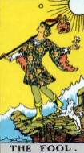 |
Wisdom |
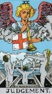 |
Judgement Day Wise Soul/Mind Immortal |
Demiurge Creation |
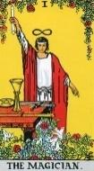 |
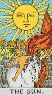 |
Phaethon Arrogance Destruction |
|
High Priestess Stability Wise Woman Isis |
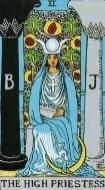 |
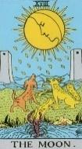 |
Oscillation Inconsistency Lunar cycle |
|
Venus |
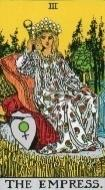 |
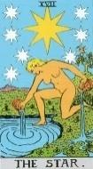 |
Astraea/Astarte Virginity |
|
Hubris Conquest |
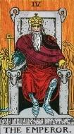 |
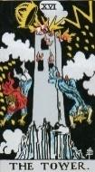 |
Babylon Humility |
|
Holy Show holy Heavenly |
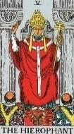 |
Sanctity |
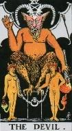 |
Profane Mundane Earthly |
Two Sexes Separation |
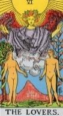 |
Life |
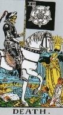 |
Make Room
|
Mind Chaos Mortal |
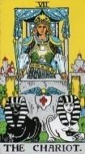 |
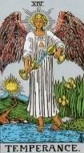 |
Iris Harmony Messenger |
|
Test Soul Self-Rule |
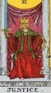 |
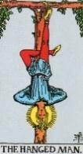 |
Sulphur / Soul Knowledge The Descent |
|
Knowledge |
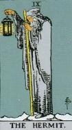 |
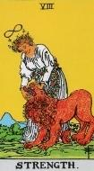 |
Mother Nature Knowledge-absolute |
|
Governors As above Cause |
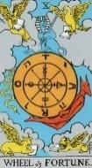 |
Law of As above, so below |
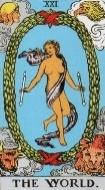 |
World Physical World So below Effect |
Polarities are a significant aspect of Hermetics. They are particularly discussed in a book The Kybalion published 1908. As an example, hot and cold are the two polarities of temperature. Similarly, As Above, So Below. Each pair of polarities is called a Duality in this book.
It is now possible to analyse the major arcana as a set of polarities, that are reasonably consistent with meanings derived from the Pymander, and presumably arranged as such by the Neoplatonist school of Renaissance Italy. This appears to have been down without harming their relevance to the Pymander.
The Catelin Geoffroy’s deck was published in Lyons, France in 1557. Stuart Kaplan says of this deck “These are the earliest Major Arcana cards numbered in the sequence that is popular today," says Kaplan of this deck, and it "is the earliest set of tarot cards containing a numbered sequence for the Major Arcana."
Waite says that the Tarot contains French mysticism. This may be the first sign of it entering into the Majors.
The Pymander describes how some will return to heaven, but others will not, and gives the conditions thereof.
The Fool represents Hermes before his enlightenment by the Pymander, or any Fool human who focuses on the body.
[P40] The ignorant die because they choose to associate themselves with that part of themselves which is mortal and will die
Judgement
On Judgement Day, the wise (not Foolish) will rise again.
[P48] He who knows himself, knows that he was born of God, who is Light and Life, which can ascend. If you know yourself to be of Light and Life, then you shall return to them. [Judgement]
The Magician
The Magician represents the Demiurge, which is also known as the Sun, source of all life. For pictorial examples of this, see the section for the Magician card.
[P13] God-the-mind, both male and female, brought forth another mind, the Demiurge (workman, craftsman), which was the Maker of Things [The Magician].
The Sun
The Sun card actually represents the Son of Apollo - Phaethon, who through overconfidence nearly destroyed the world.
[P65] To Apollo the soul gives back Boldness and Audacity, and over-confidence. [The Sun, Phaethon] (Tipareth)
The High Priestess
The High Priestess is Priestess of the Moon, and has knowledge to stabilise the effects of the Moon
[P61] To the Moon, the soul gives back the power of increasing and decreasing, becoming constant. [High Priestess] (Yesod)
The Moon
The lunar cycle controls many things in nature, including tides, emotional behaviour, menstrual cycle, breeding of lobster and coral
The Empress
Venus was the essence of femininity, and a rather promiscuous Goddess. Of particular interest was her cuckolding of her husband Vulcan with Mars. Mars appears as the Emperor, earning Venus the title of Empress.
The Star
The Star is linked to Ishtar and hence to Astraea, the goddess who deserted mankind and their wicked ways to become the constellation of Virgo, the virgin.
[P63] To Venus, the soul gives back concupiscence. [The Star, Astraea, Virgo] (Netzach)
Mars, God of War, achieves rulership and empire through war. Mars is considered to be not overly bright, relying instead on violence to get his way. He arrogantly assumes that his proficiency at arms entitles him to rule the gods, in Jupiter’s place.
The Tower of Babylon was built by humans whose arrogance was so great as to hope to build a Tower to equal the Gods. For this, God destroyed the Tower, with lightning in this case.
[P64] To Mars, the soul gives back Arrogance, Domination and Ambition. [The Tower of Babel] (Geburah)
Linguists claim that the word Hierophant is a translation of the phrase “Show Holy”.
[P68] Above these, in the eighth domain, divested of the trappings of the Governors, the soul joins those who sing the praises of God. [The Hierophant]
The Devil may well be the Demiurge, in an ongoing caretaker role after creating the world.
[P56] The Mind keeps distant from evil men, being replaced by the Devil [The Devil], who tortures them via their senses, and makes them more open to sin.
The Chariot of Plato, representing the mind and hence Mercury, is known as a trickster, prone to conning other Gods out of their possessions. Lies and half-truths are common from him. The Chariot symbolises our constant struggle between doing what is right (white horse), and what is selfish (dark horse), and the dark horse is a good indicator of our troublemaking nature, making trouble to prevent smooth progress.
The goddess Iris is, like Mercury, a messenger of the Gods, but whereas Mercury is a messenger between the Gods and men, Iris is a messenger between the various Gods. She carries waters of the Styx by which Gods to swear oath or truth.
[P62] To Mercury, the soul gives back lies and schemes of Evil. [Temperance, Iris] (Hod)
The Lovers card represents the separation of hermaphroditic mankind into male and female, as in creating Eve from a rib of Adams. God does this to all life (almost), creating sexual reproduction.
[P37] God then loosened the bonds in all living creatures, allowing them to separate into male and female. [The Lovers]
With the coming of sexual reproduction, which hastens evolution, there is also a need for the old gene pool to die off.
[P38] God said “Go forth and multiply. Let those with a Mind know themselves to be immortal, and that the cause of Death [Death] is the love of the body
Justice is an alias of Jupiter, represented by King Solomon and his famous judicial wisdom. Jupiter granted self-rule to mankind in return for our aid in the war against Saturn, and Solomon represents the first human arbiter of Justice. Previously Saturn had been the only arbiter. So, contrary to popular belief, the Justice card is about human Justice, not divine.
The Hanged Man is a depiction of the soul’s descent into materialism. This is mirrored in the Renaissance traditional punishment for thieves of hanging them inverted by one foot. Some cards show him with two bags of loot in his hands. This is Jupiter’s negative side being punished.
[P66] To Jupiter, the soul gives back striving for excessive Wealth by evil means [The Hanged Man] ( Chesed )
Science was originally known as Natural Philosophy, and before that as Alchemy. Under the section on the Hermit, we see the Hermit trying to follow the footsteps of Dame Nature. In this, we see the change from Hermetic to Hermit, the nature of those who have mind, and their study of Nature as represented either by the World or Ops as Goddess of fertility and nature. Note that Kronos (Saturn) and Hermes (Mercury) are known to have shared a commonality, with the child Mercury also riding upon the Chariot of Saturn.
The Hermit is Saturn standing upon the snowy tops of Mount Olympus, looking down on the world. He is known for an obsession with knowledge His name indicates that the Hermit follows the teachings of Hermes, known as Alchemy. He studies the ways of his wife Ops, nature, the material world
Strength is Ops, Goddess of Nature, and mother to Jupiter. She is a goddess of fertility and crops. The Hermit, an Alchemist, studies Mother Nature for she is the source of all life.
[P38] God said “Go forth and multiply. Let those with a Mind know themselves to be immortal, and that the cause of Death [Death] is the love of the body, and let him learn all things that are [Hermit]”.
The Wheel of Fortune
The circling of the Governors is represented by the Wheel of Fortune (astrology)
[P15] The Demiurge, Mind, and Word combined with the workmanship of Nature, and the Demiurge contained the Governors and his workmanship, and set them to move in circles [The Wheel of Fate], so that they have neither beginning nor end.
The World
The fate of the World is determined by the Governors.
[P13] The Demiurge made the seven planetary Governors. These seven encompass the entire world that is perceived by the senses (the material world made of the four elements of Nature), and their rule is called Fate or Destiny.
The Major Arcana are presented below in the revised numbering according to polarity pairs, which is the standard Ferrara / Steele Sermon numbering except that Death and Temperance are reversed. This is done so that the reader may follow the story of the Pymander when reading this section in the presented order.
For the Major Arcana, four decks are used to show the cards.
In the following, “Exorcises” indicates the condition where the individual has overcome the Governor's negative influence, achieving personal liberation and growth.
Important distinction: Hermes Trismegistus (Greek) is the recipient of the Pymander wisdom, whereas Mercury (Roman) represents a governor in the tarot cards, reflecting the Roman mythological influences used in the Italian origins of the Tarot.
In the following, each major card is assigned to one of the following Functions:
Table 14 - Functions of Cards within the Pymander
Narrative |
|
Identifies |
A card that Identifies a Governor, with the implication that the governor gifts negative traits to the Soul of man. |
Exorcises |
A card that also represents a Governor, but which banishes the negative aspect of the governor, leaving the soul clean. |
Meaning of Life |
A card that describes some major aspect of life as we know it. |
Having established the framework, we now turn to the first card, the Fool, a pivotal figure in the Pymander's Narrative."